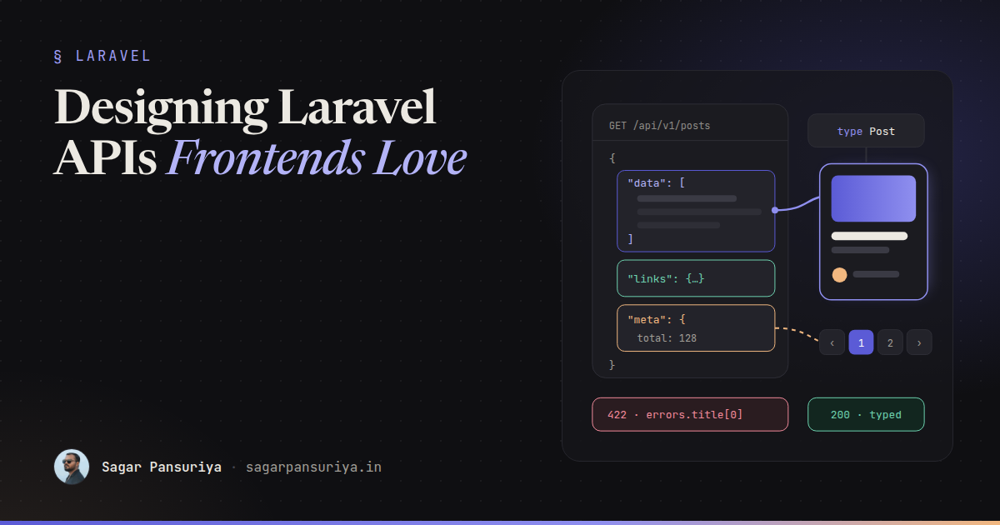
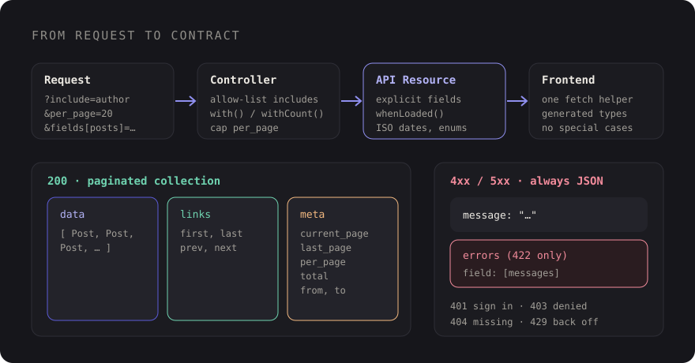

Designing Laravel APIs Frontends Love: Resources, Envelopes and Types


You've probably worked with an API where every endpoint feels like it was written by a
different person. One returns a bare array, the next wraps things in data. Dates
come back as 2026-12-14 09:00:00 here and as a Unix timestamp there. A missing
relationship is sometimes null, sometimes an empty array, sometimes just absent.
Validation errors have three different shapes depending on which controller threw them.
None of that is a backend bug, exactly. Everything "works". But every inconsistency becomes a
special case in the frontend, a defensive ?., a comment that says "this endpoint is
different". Multiply that by fifty endpoints and three frontend developers and you get a
codebase where nobody trusts the API.
I spend most of my time on the frontend side of that contract, so this post is the list of things I ask backend teams for when we build Laravel APIs for React, Vue or mobile clients. Almost all of it is built into Laravel already. It just needs to be applied consistently.
Resources are the contract, not the model
The first rule: never return Eloquent models straight from a controller. A model's
toArray() is whatever columns happen to exist today. Add a column next month and
it silently ships to every client. Rename one and the frontend breaks.
API resources give you an explicit, reviewable shape:
// app/Http/Resources/PostResource.php
class PostResource extends JsonResource
{
public function toArray(Request $request): array
{
return [
'id' => $this->id,
'title' => $this->title,
'slug' => $this->slug,
'excerpt' => $this->excerpt,
'status' => $this->status->value, // enums as their string value
'published_at' => $this->published_at?->toIso8601String(),
'reading_minutes' => $this->reading_minutes,
'author' => UserResource::make($this->whenLoaded('author')),
'tags' => TagResource::collection($this->whenLoaded('tags')),
'comments_count' => $this->whenCounted('comments'),
'can' => [
'update' => $request->user()?->can('update', $this->resource) ?? false,
],
];
}
}A few conventions hiding in there that frontends appreciate:
- One date format everywhere. ISO 8601 with the offset. The browser can parse it, and nobody has to guess the timezone.
- Enums as stable strings, not integers the frontend has to map.
- Money as integer minor units (cents, paise) with a currency code, never floats.
- Permissions in the payload. A small
canobject means the UI doesn't have to re-implement your policies to decide whether to show an Edit button.
whenLoaded and friends: no surprise queries
whenLoaded('author') only includes the relationship if the controller eager loaded
it. If it wasn't loaded, the key is left out entirely rather than triggering a lazy query
per row. That single habit prevents most N+1 problems in API code, because the resource can
never quietly load data on its own.
The same family covers other conditional fields:
| Method | Includes the value when… |
|---|---|
whenLoaded('rel') | The relationship was eager loaded |
whenCounted('rel') | A withCount ran for it |
when($condition, $value) | Your condition is true (admin-only fields, for example) |
whenNotNull($value) | The value isn't null |
mergeWhen($condition, [...]) | Several keys share one condition |
One thing to agree on as a team: "key missing" and "key is null" mean different things. With
whenLoaded, a missing author means "not requested", while
"author": null means "this post has no author". Write that down, because
TypeScript types depend on it.
One envelope, every time
By default, a single resource is wrapped in a data key, and a paginated
collection returns data, links and meta. You can turn the
wrapping off with JsonResource::withoutWrapping(), but I'd keep it. A predictable
top-level shape means your fetch helper can unwrap every response the same way, and you have
somewhere to put metadata later without a breaking change.

When you need extra top-level information, use additional() at the call site or
a with() method on the resource instead of inventing a new wrapper:
return PostResource::collection($posts)->additional([
'meta' => ['filters' => $request->only(['status', 'tag'])],
]);Pagination metadata the UI can actually use
Pass a paginator to a resource collection and Laravel does the work: meta gets
current_page, last_page, per_page, total,
from and to, and links gets first, last, previous and next
URLs. That's enough to build a numbered paginator without extra requests.
public function index(Request $request)
{
$posts = Post::query()
->with('author')
->withCount('comments')
->latest('published_at')
->paginate($request->integer('per_page', 20))
->withQueryString();
return PostResource::collection($posts);
}Two things to decide deliberately. First, cap per_page on the server, or someone
will ask for ten thousand rows. Second, pick the paginator per endpoint:
paginate() for numbered pages, simplePaginate() when you don't need a
total (it skips the count query), and cursorPaginate() for infinite scroll and
feeds, where offset pagination drifts as new rows arrive. Frontends can handle all three, as
long as each endpoint's choice is documented and doesn't change.
Includes and sparse fieldsets
Different screens need different amounts of data. A list view wants titles and dates; a detail view wants the author, tags and comments. Rather than building a separate endpoint per screen, let the client ask:
GET /api/v1/posts?include=author,tags&fields[posts]=id,title,slug,published_atThe part that matters is the allow list. Never pass a user-supplied include straight into
with(), or clients can load any relationship on your models, including ones you
never meant to expose. A hand-rolled version is small:
$allowed = ['author', 'tags', 'comments'];
$includes = collect(explode(',', (string) $request->query('include')))
->map(fn ($i) => trim($i))
->intersect($allowed)
->all();
$posts = Post::query()->with($includes)->paginate();Because the resource uses whenLoaded, the includes the client didn't ask for
simply don't appear. If you want filters, sorts, includes and fields all handled with the same
allow-list approach, Spatie's laravel-query-builder package follows the JSON:API
conventions for these query parameters and saves a lot of boilerplate.
A single error format
Laravel's validation errors already have a good shape: a 422 status with a
message and an errors object keyed by field name, each holding an array
of messages. Frontend form libraries map that onto inputs almost directly.
{
"message": "The title field is required. (and 1 more error)",
"errors": {
"title": ["The title field is required."],
"tags.0": ["The selected tags.0 is invalid."]
}
}The problem is everything else. A 404 from route model binding, a 403 from a policy, a 500
from an exception: make sure they all return JSON with at least a message, never
an HTML error page. In Laravel 11 and later you configure that in
bootstrap/app.php:
->withExceptions(function (Exceptions $exceptions) {
$exceptions->shouldRenderJsonWhen(
fn (Request $request) => $request->is('api/*') || $request->expectsJson()
);
})Then agree on the rules the frontend can rely on: 401 means redirect to sign-in,
403 means show "not allowed", 404 means not found,
422 means field errors in errors, 429 means back off, and
anything 5xx gets a generic message and a retry. Nested array fields use dot
notation keys like items.2.quantity, so tell the frontend to expect those too.
Versioning without drama
You'll need to change the contract eventually. The simplest strategy that works for most teams is a URL prefix:
// routes/api.php
Route::prefix('v1')->name('v1.')->group(base_path('routes/api_v1.php'));
Route::prefix('v2')->name('v2.')->group(base_path('routes/api_v2.php'));Header-based versioning is more "pure" but harder to debug in a browser and harder to cache.
Whichever you choose, the more useful discipline is knowing what counts as breaking. Adding a
field is not breaking. Removing or renaming a field, changing a type, or changing what
null means is. Additive changes go into the current version; breaking ones get a
new resource class in a V2 namespace, while V1 keeps working until
clients have moved.
If your only client is your own web frontend, deployed together with the API, you may not need versions at all. It's one of the quieter advantages of Livewire and Inertia that came up in my Livewire vs Inertia decision framework: no separate API to version. A public API is a contract, and contracts have maintenance costs.
Typed responses on the frontend
All this consistency pays off most when the frontend has types. Writing TypeScript interfaces by hand works for a while, then drifts. There are three common approaches to keeping them in sync:
- Generate from an OpenAPI spec. Tools that analyse your routes, form requests and resources can produce an OpenAPI document; a generator on the frontend turns that into TypeScript. This gives you documentation for free.
- Generate from PHP classes. If you describe payloads with typed data
objects (Spatie's
laravel-datais a popular choice), a transformer can write matching TypeScript types, including your enums. - Hand-written types plus contract tests. Keep interfaces manually, but assert response shapes in feature tests so a backend change fails CI before it reaches the frontend.
Even with generation, add shape assertions to your feature tests. Laravel's fluent JSON assertions make it cheap:
$this->getJson('/api/v1/posts?include=author')
->assertOk()
->assertJson(fn (AssertableJson $json) => $json
->has('data.0', fn (AssertableJson $post) => $post
->whereType('id', 'integer')
->whereType('published_at', 'string|null')
->has('author')
->etc()
)
->has('meta.total')
->has('links')
);The API contract checklist
- Every response goes through an API resource. No raw models.
- One envelope:
data, pluslinksandmetafor collections. - ISO 8601 dates, string enums, integer money with a currency code.
- Relationships via
whenLoaded, counts viawhenCounted, and a written rule for missing vs null. - Includes and fields validated against an allow list.
- A capped
per_pageand a documented paginator type per endpoint. - JSON errors for every status code, with the standard
422shape for validation. - A versioning rule, and a shared definition of "breaking".
- Generated or tested TypeScript types, so drift fails CI instead of production.
None of these rules is hard on its own. The value comes from applying all of them, on every endpoint, every time. That's what turns an API from something the frontend works around into something it can build on without second-guessing.
Discussion